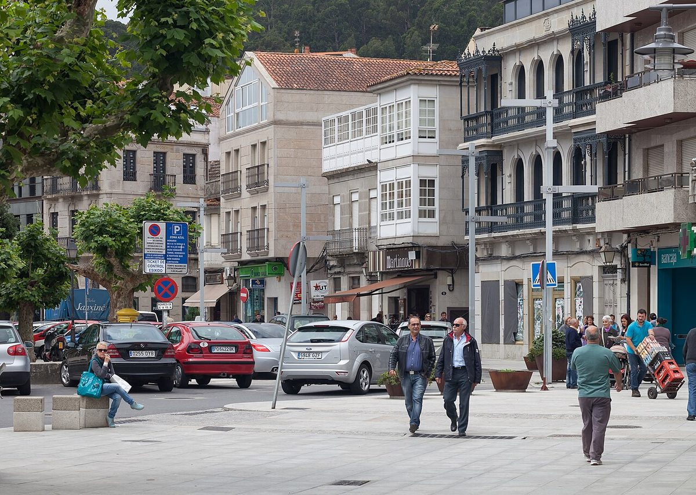

Gemelos electorales · Elecciones: 2004-2023
Moaña y Sanxenxo, gemelos que votan distinto
Moaña y Sanxenxo, la misma renta y la misma edad: 17 puntos de distancia en el voto a la derecha
Por Nacho G. del Álamo ·
Moaña y Sanxenxo tienen casi la misma renta (20.510 y 20.134 euros por unidad de consumo), la misma edad media (46,3 y 46,9 años) y el mismo paro. El 23J, PP, Vox y Cs sacaron el 38,1 % en Moaña y el 55,3 % en Sanxenxo. En las municipales de mayo, el BNG ganó Moaña con el 56,0 %; en Sanxenxo, el PP sacó el 56,0 %.
Dato: verificable y reproducible
Ver Moaña en el mapa →Ver Cangas en el mapa →Ver Sanxenxo en el mapa →Ver Marín en el mapa →
La pregunta: ¿Por qué municipios gallegos con el mismo perfil, a pocos kilómetros, votan tan distinto?
Seis municipios casi iguales
DatoEn las Rías Baixas hay seis municipios de entre 11.830 y 26.664 habitantes que el INE describe casi igual: Moaña, Cangas y Bueu, en la península do Morrazo, y Sanxenxo, Marín y Poio.
DatoSus rentas van de 19.174 a 22.302 euros; su edad media, de 44,7 a 46,9 años; el paro de 2021, del 15,1 % al 18,9 %.
DatoCon ese perfil, el modelo de esta serie les asigna a todos un voto a la derecha parecido, entre el 42,9 % y el 46,4 %. El resultado real va del 37,0 % de Cangas al 55,3 % de Sanxenxo.
El Morrazo frente a la otra orilla
DatoMoaña y Cangas, en la comarca do Morrazo, votan a la derecha unos 6 puntos menos de lo previsto (−6,2 y −6,7). Sanxenxo, Marín y Poio votan por encima (+11,1, +8,7 y +7,4). Bueu, también en el Morrazo, queda en medio (+2,8).
DatoEl PP ganó las generales en los seis. La diferencia está en cuánto: 34,5 % en Moaña y 33,6 % en Cangas, frente al 50,0 % en Sanxenxo y el 47,7 % en Poio.
El BNG marca la diferencia
DatoEl BNG sacó el 23J el 16,9 % en Moaña y el 14,3 % en Cangas, frente al 7,6 % en Sanxenxo y el 8,0 % en Marín. En el conjunto de la provincia de Pontevedra, el 9,4 %.
DatoEn las municipales la distancia se agranda. El BNG ganó Moaña (56,0 %) y Bueu (44,6 %); en Cangas, ganó el PP (43,6 %) y el BNG sacó el 25,8 %. En Sanxenxo y Marín, el PP pasó del 55 % (56,0 % y 55,3 %).
Una distancia de veinte años
DatoEn 2004, la derecha sacaba el 42,0 % en Moaña y el 51,4 % en Sanxenxo: ya votaban distinto. En 2023, la distancia era de 17,2 puntos. El BNG llegó a sacar el 21,6 % en Moaña en las generales de 2004, cayó al 5,8 % en 2016 y volvió a subir hasta el 16,9 %.
Sobre el terreno
DatoEn 1617 un millar de corsarios berberiscos asaltaron Cangas; en 1622 la Inquisición condenó por brujería a la vecina María Soliña, a quien la villa recuerda cada año. Fuentes: 1, 2
Lo que no sabemos
- HipótesisPor qué. La tradición marinera y sindical del Morrazo y el peso histórico del nacionalismo en sus ayuntamientos son hipótesis frecuentes en la prensa gallega; esta pieza no las ha contrastado con dos fuentes independientes.
Dato: verificable y reproducible. Patrón: relación descriptiva, sin causa. Hipótesis: explicación posible que aún no tiene dos fuentes independientes.
Los datos
| Municipio | Renta | Edad | Paro | Derecha | Previsto | PP | BNG | BNG municipales |
|---|---|---|---|---|---|---|---|---|
| Cangas | 20.664 | 46,4 | 17,6 | 37,0 | 43,7 | 33,6 | 14,3 | 25,8 |
| Moaña | 20.510 | 46,3 | 18,9 | 38,1 | 44,2 | 34,5 | 16,9 | 56,0 |
| Bueu | 20.513 | 46,9 | 17,3 | 45,9 | 43,1 | 42,4 | 11,7 | 44,6 |
| Marín | 19.174 | 46,0 | 18,0 | 51,6 | 42,9 | 44,6 | 8,0 | 17,4 |
| Poio | 22.302 | 44,7 | 15,1 | 53,8 | 46,4 | 47,7 | 7,5 | 17,9 |
| Sanxenxo | 20.134 | 46,9 | 17,8 | 55,3 | 44,3 | 50,0 | 7,6 | 17,1 |
Método y fuentes
- Qué se compara
- Moaña, Cangas y Bueu (comarca do Morrazo) frente a Sanxenxo, Marín y Poio, con perfiles casi idénticos según el INE.
- Límites
- «Derecha» suma PP, Vox y Cs. Los municipios gallegos son extensos y se organizan en parroquias; el promedio municipal oculta diferencias internas. El modelo no es una explicación.
- Metodología completa
- Cómo se calculan los porcentajes, el modelo, los gemelos y los escaños
- Fuentes
- Ministerio del Interior, resultados electorales por mesa (Infoelectoral). Congreso 2004-2023 vía pollspaindata, commit ee5ecda; municipales 2007-2023 de los ficheros de Infoelectoral
- INE, Atlas de Distribución de Renta de los Hogares 2023 (renta, edad, población), vía ineAtlas.data
- INE, Censo de Población y Viviendas 2021 (estudios, paro, extranjeros)
- Autoría
- Nacho G. del Álamo
- Revisión de datos y texto
- Nacho G. del Álamo, 7 de octubre de 2026
- Publicado · actualizado
- 7 de octubre de 2026 · 8 de octubre de 2026
- Correcciones
- Ninguna. Historial del Atlas